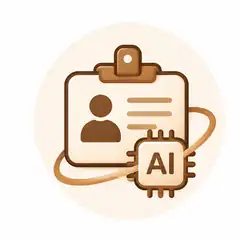

GEO Pass
Машиночитаемая карточка эксперта. Бесплатный первый шаг — даже без собственного сайта.
0 €
Описание и цены Три направления для развития твоего присутствия в интернете. Ты сам выбираешь, с чего начать и как быстро двигаться дальше.

Машиночитаемая карточка эксперта. Бесплатный первый шаг — даже без собственного сайта.

Статья до 500 слов в независимом региональном журнале — после решения редакции и твоего согласия.
(Все цены указаны без НДС. Дополнительно начисляется НДС по действующей ставке.)

Твой сайт принадлежит тебе. Без привязки к агентству или платному конструктору.
(Все цены указаны без НДС. Дополнительно начисляется НДС по действующей ставке.)